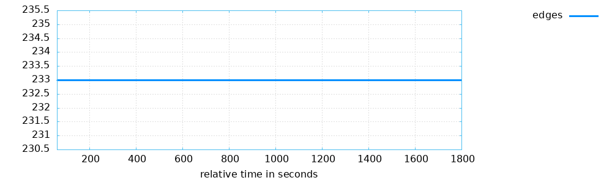
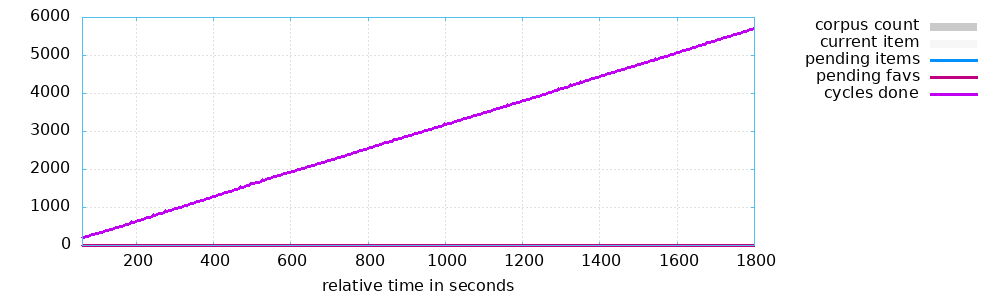
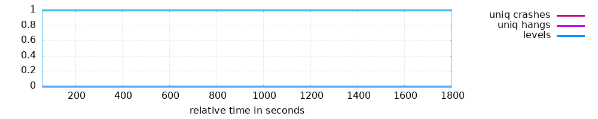
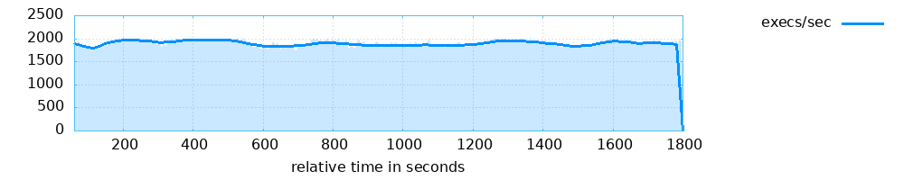

<table style="font-family: 'Trebuchet MS', 'Tahoma', 'Arial', 'Helvetica'">
<tr><td style="width: 18ex"><b>Banner:</b></td><td>...fuzz_bins/blackbox_fuzz_fuzz_transforms</td></tr>
<tr><td><b>Directory:</b></td><td>/fuzzing/instrumented/findings-qemu/transforms/default</td></tr>
<tr><td><b>Generated on:</b></td><td>Wed May 13 18:17:03 UTC 2026</td></tr>
</table>
<p>

<p>
<p>


